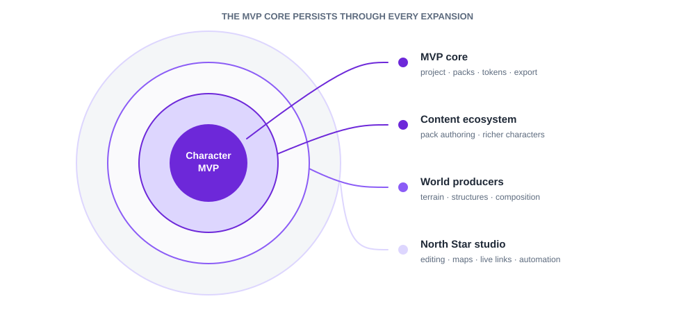

1 · MVP scope Build now
The first user, complete character-to-engine journey, included capabilities, reusable foundations, deferred scope, and definition of done.
The Sprite Project
A verified character-generator MVP runs as a zero-server, local-first web app while shared contracts preserve a path to the complete world-asset studio.
Content ecosystem implemented · UPD-002
The dual-host MVP now installs, manages, authors, validates, and transfers compatible data-only humanoid packs without application releases or JSON editing. Review the locally evidenced UPD-002 · Local Content Pack Ecosystem. Actual Pages publication and independent clean-machine Windows observation remain release verification gates.
MVP · Build now
North Star · Grow toward
The first product is deliberately narrow, but its versioned contracts become the center of each later expansion.

The first user, complete character-to-engine journey, included capabilities, reusable foundations, deferred scope, and definition of done.
The gated path from an immediate technical slice through MVP release, content expansion, world generators, and the complete studio.
The machine-readable work graph, unattended defaults, evidence gates, recovery behavior, and the small set of inputs that only the owner can provide.
The mandatory update pipeline from customer promise through scenarios, user-can statements, task flows, IA/UI, objective evidence, and preserved baselines.
Accepted decisions and operational contracts for zero-server hosting, IndexedDB, portable projects, offline delivery, and future platform boundaries.
The durable product promise, complete capability horizon, shared architecture, and principles that keep incremental delivery pointed at one destination.
Research on the LPC ecosystem and indie workflow, plus detailed proposals for every generator and shared system in the long-term product.
mvp/ is the active product boundary; north-star/ protects the complete destination.planning/ contains delivery phases and evidence-based exit gates, beginning with implementation now.architecture/decisions/ preserves accepted rationale; architecture/platform/ defines
the current storage, delivery, offline, and host contracts.governance/ defines the mandatory update pipeline; delivery/updates/ holds each
versioned request, baseline, derivation, execution plan, and evidence.research/ is the evidence base; design/ contains detailed long-term proposals;
execution/ records what is actually built.Current platform decision
Read ADR-001 · Zero-Server Web Platform before changing persistence, pack delivery, offline behavior, filesystem access, or deployment.